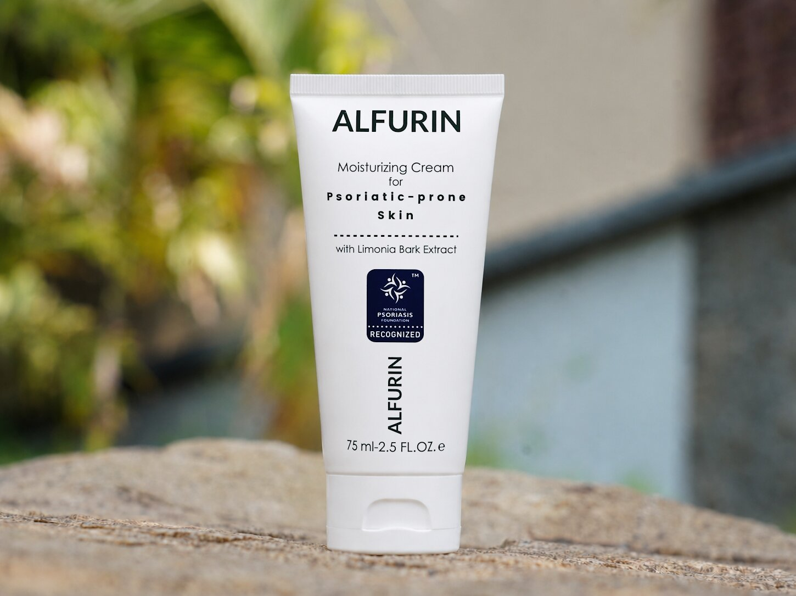

Řada ALFURIN
Dva produkty. Jeden ucelený systém.
Vyvinuty společně pro každodenní použití — mléko a krém se vzájemně doplňují a zklidňují, chrání a obnovují pokožku náchylnou k psoriáze.

Denní hydratace
Hydratační mléko
Každodenní ochrana a prevence
- Lehká, rychle se vstřebávající formule
- Snižuje odlupování a povrchové šupinky
- Zklidňuje zarudnutí a chronické podráždění
- Nižší koncentrace extraktu pro prevenci

Intenzivní péče
Hydratační krém
Intenzivní cílená úleva
- Nižší koncentrace extraktu pro prevenci
- Cíleně působí na silné plaky
- Hluboké zadržování vlhkosti přes noc
- Dvojité protizánětlivé působení